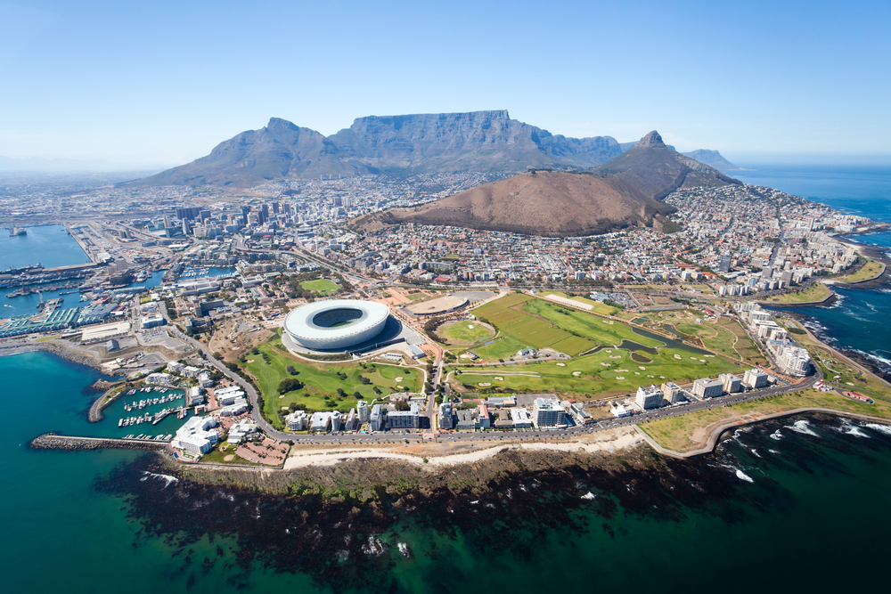
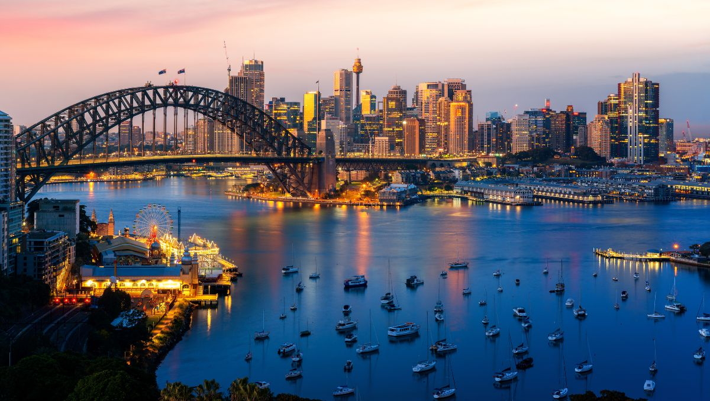

Cartões Postais
Paris
Paris, a capital da França, é uma importante cidade europeia e um centro mundial de arte, moda, gastronomia e cultura. Sua paisagem urbana do século XIX é cortada por avenidas largas e pelo rio Sena. A cidade é conhecida por monumentos como a Torre Eiffel e a Catedral de Notre-Dame, uma construção gótica do século XII, sendo famosa também pela cultura dos cafés e por lojas de estilistas famosos na Rue du Faubourg Saint-Honoré.

Kyoto
Kyoto, antiga capital do Japão, é uma cidade da ilha de Honshu, famosa por seus vários templos clássicos budistas, jardins, palácios imperiais, santuários xintoístas e casas de madeira tradicionais. Ela também é conhecida pelas tradições formais, como o jantar kaiseki, com vários pratos específicos, e as gueixas, geralmente encontradas no distrito de Gion.

Rio de Janeiro
O Rio de Janeiro é uma grande cidade brasileira à beira-mar, famosa pelas praias de Copacabana e Ipanema, pela estátua de 38 metros de altura do Cristo Redentor, no topo do Corcovado, e pelo Pão de Açúcar, um pico de granito com teleféricos até seu cume. A cidade também é conhecida pelas grandes favelas. O empolgante Carnaval, com carros alegóricos, fantasias extravagantes e sambistas, é considerado o maior do mundo.

Cidade do Cabo
A Cidade do Cabo é uma cidade portuária na costa sudoeste da África do Sul, em uma península ao pé da imponente Montanha da Mesa. Bondes sobem lentamente até o topo plano da montanha, que ostenta vistas panorâmicas da cidade, do agitado porto e dos barcos a caminho da ilha Robben, famosa prisão na qual Nelson Mandela foi encarcerado e que agora é um museu.
Sidney
Sydney, capital do estado de Nova Gales do Sul e uma das maiores cidades da Austrália, é especialmente conhecida pela Ópera de Sydney, que fica na orla e tem um design inspirado em velas de barco. O enorme Porto Darling e o porto de Circular Quay, de menores dimensões, são centros da vida à beira-mar. Nas proximidades, ficam a Ponte da Baía de Sydney, em forma de arco, e o Jardim Botânico Real.
